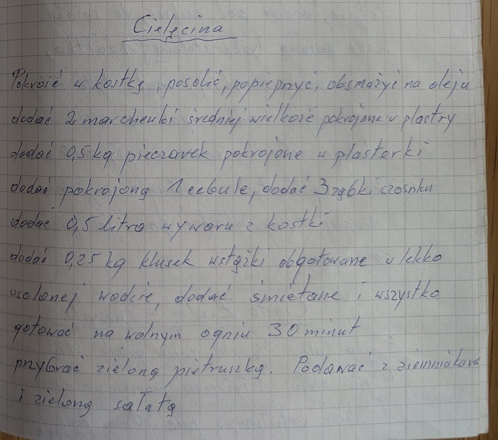

Cielęcina


Składniki
- cielęcina
- sól, pieprz
- olej
- 2 średnie marchewki
- 0,5 kg pieczarek
- 1 cebula
- 3 ząbki czosnku
- 0,5 litra wywaru z kostki
- 0,25 kg klusek wstążek
- śmietana
- zielona pietruszka
Przygotowanie
- Mięso pokroić w kostkę, posolić, popieprzyć i obsmażyć na oleju.
- Dodać marchewki w plastrach, pieczarki w plasterkach, pokrojoną cebulę i 3 ząbki czosnku.
- Dodać 0,5 litra wywaru z kostki.
- Dodać kluski wstążki obgotowane w lekko osolonej wodzie i śmietanę.
- Gotować na wolnym ogniu 30 minut.
- Przybrać zieloną pietruszką, podawać z ziemniakami i zieloną sałatą.
Oryginalny zapis
Cielęcina Pokroić w kostkę, posolić, popieprzyć, obsmażyć na oleju dodać 2 marchewki średniej wielkości pokrojone w plastry dodać 0,5 kg pieczarek pokrojone w plasterki dodać pokrojoną 1 cebulę, dodać 3 ząbki czosnku dodać 0,5 litra wywaru z kostki dodać 0,25 kg klusek wstążki obgotowane w lekko osolonej wodzie, dodać śmietanę i wszystko gotować na wolnym ogniu 30 minut przybrać zieloną pietruszką. Podawać z ziemniakami i zieloną sałatą